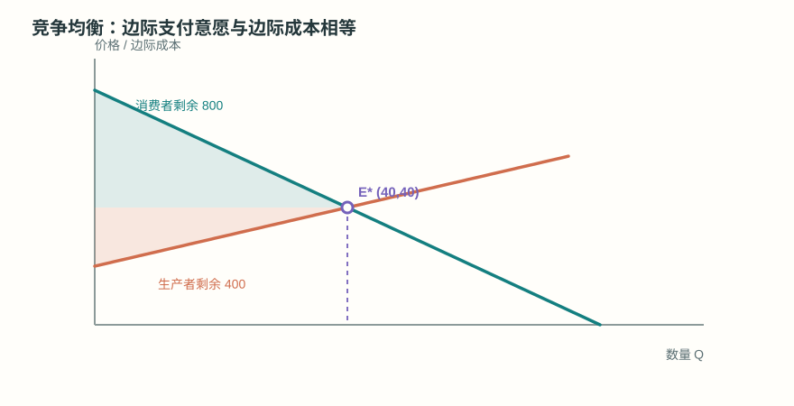

CHAPTER 14 · MICROECONOMICS
完全竞争市场（下）：均衡与效率
从企业的正利润与亏损，推演行业进入、退出和长期供给，再区分配置效率、生产效率与公平。
单个企业的利润，如何变成整个行业的进入与退出？
短期内，一家企业可能因为市场价格上涨而获得正经济利润。只要进入壁垒较低，其他企业就会看到机会：新企业进入，现有企业扩产，行业总供给增加。若需求没有继续同步增长，供给扩张会压低价格，直至经济利润被竞争消散。
反过来，需求下降或投入成本上升可能使企业出现经济亏损。短期内，若价格仍能覆盖平均可变成本，部分企业继续营业；长期中，持续亏损会促使企业退出，行业供给收缩，价格向可持续的长期水平调整。

长期竞争均衡：零经济利润不等于没有利润
沿用第12章成本函数，ATC在q=4时达到最低值15，MC也在该点等于15。假设企业能选择最合适的厂房规模，并且该成本最低点也是长期平均成本的最低点；在长期竞争均衡中，市场价格回到P=15，企业生产q=4，满足P=MC=min LRAC。
当P=15、q=4时，TR=60、TC=60，经济利润为零。企业仍然支付员工工资、租金并获得业主的正常机会回报；“零经济利润”是指没有超过所有投入机会成本的超额利润。若P暂时升至18，企业在本例生产约4.236批并获得正经济利润，吸引新企业进入；若价格长期低于可持续成本，企业则会退出。
行业长期供给：水平、向上或向下都可能
长期行业供给曲线的形状取决于行业扩张时投入价格和技术如何变化。常数成本行业中，行业扩大并不会系统性抬高投入价格，长期供给可以近似水平；递增成本行业扩张会推高稀缺投入价格，长期供给向上倾斜；递减成本行业可能因产业集聚、供应链改善或技术扩散而降低单位成本，长期供给可能向下倾斜。
因此，“自由进入必然让所有市场价格固定”是错误的。零经济利润的长期结论需要竞争、可进入退出、技术和投入价格等条件；行业扩张对要素市场的反馈会改变长期价格路径。
一个常数成本行业的教学模型可设市场需求QD=A−4P。若长期价格维持15，每家有效率企业生产4批，则行业需求由40增至60时，长期活跃企业数量从10家增至15家。这是行业进入的结果，不是单个企业的产量曲线。
配置效率与生产效率：两个不同的判断
配置效率（allocative efficiency）问的是最后一单位产品给消费者带来的边际收益是否等于社会边际成本。在无外部性、无市场势力等理想条件下，竞争均衡P=MC，使消费者的边际支付意愿与生产的边际成本相等。生产效率（productive efficiency）问的是是否以最低可行平均成本生产；长期竞争均衡在模型条件下满足P=min LRAC。
用一个独立的教学市场说明面积计算：需求曲线P=80−Q，边际成本MC=20+0.5Q。均衡满足80−Q=20+0.5Q，因此Q*=40、P*=40。消费者剩余为800，生产者剩余为400，总剩余为1200。

效率不等于公平。市场即使达到总剩余最大，也不意味着收入分配令人满意；若存在污染、知识外溢、公共物品、信息不对称或市场势力，私人边际成本与社会边际成本、私人支付意愿与社会收益可能不一致，竞争均衡也不保证社会最优。
交互实验：需求扩张需要多少家企业？
常数成本行业的长期进入
假设长期价格保持15，每家企业在最低LRAC处生产4批，行业需求为Q=A−4P。改变需求截距A，观察长期总产量与企业数量。
长期价格P=15，总需求Q=40，每家企业生产4批，行业需要10家企业。
该实验只计算常数成本行业的长期终点；短期需求冲击后的价格变化和进入时滞并未模拟。
若需求从A=100增至A=120，为什么行业产量和企业数量增加，而长期价格仍为15？
查看解析
长期价格由最低LRAC约束，保持15；市场需求在该价格下从40增至60。每家企业仍在有效率规模生产4批，因此活跃企业数从10增加到15。
参考资料与模型边界
资料用于核对概念定义和推导条件。本章数值均为明确标注的教学假设，图解独立绘制。